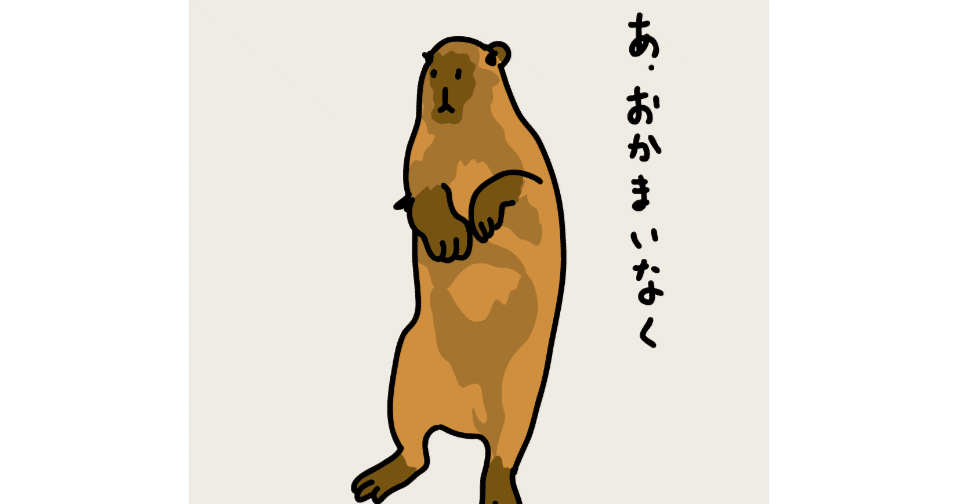

大人は子どもに比べて時間経過を早く感じやすい生き物だ。
その理由には、実に様々な説が唱えられている。
一説によると、ありとあらゆることが新しい経験として記憶に刻まれる子どもとは違い、大人は日々の中で目新しい体験が少ない。そんな風に同じような毎日を繰り返していると、脳はその反復行動をひとつの記憶として集約してしまうから、時間が短縮されたように感じるのだという。
大人になっても適切に時間を認識し、有意義に毎日を過ごすために僕たちができることは、定期的に新しい習慣や趣味を持つこと。それはきっと、僕たちが思っている以上に重要な事柄なのだろう。
今年に入ってから僕の生活で変わったことといえば、職場に新たにコミュニケーションツールが導入され、その掲示板機能に各々が一言で挨拶文を書き込むようになったことくらいだろうか。
こう書くと、「なんだ、そんなことかい！」とツッコミが入ってしまうかもしれないが、案外これが面倒なのだ。今日はその理由をちょいと語らせてほしい。
そもそもウチの職場では大人しい人が多いため会話をあまり交わさないのだが、実はそんな集団の中で仕事ができるのが僕にとっても心地がよかった。
だが、しかし。この春に関西支社から東京本社に赴任してきた新部長が社員への挨拶がてら、こう言ったのだ。
「なんか無口な人多そうだし、それぞれの距離を縮めるためにも一言挨拶文を毎朝書き込んでもらおうかな！ 俺もみんなのこと知りたいさかいに！」
「……えっ？」
口には出さないものの、きっと僕だけじゃなく、皆々がそう当惑したことだろう。
この静かな職場こそがウチのなによりの売りだというのに！ あろうことか、この新しい部長さんとやらはそれに気づいている様子もなく、なんならこの環境をぶち壊すおつもりか！？ まさに西から来訪せし破壊者！ 頼むから余計なことせんといて！(なぜか僕まで関西弁)
しかし、そんな願いもむなしく、翌日から早速、出社の朝は必ずそのコミュニケーションツールに、各々が一言挨拶文を投稿するようになったのである。
「おはようございます。出社しました」
ここまでは全員が同じ文面なのだが、その下に続く一文が個々人で毎朝独自に書き込む必要がある箇所だ。色々と考え抜いた結果、僕はその投稿初日にこう書き込んだ。
「いやぁ、春ですね。桜が綺麗です」
その後、様々な業務対応に追われてしまいゆっくりとその反応を見ることはできなかったが、手の空いた昼休憩時に僕の投稿にスタンプ(SNSのような感覚で投稿に絵文字でリアクションできる機能)がついていることに気づいた。
てっきり「🌸(桜の絵文字)」や「👍 (いいねの絵文字)」がついているのだろうと予想しながら内容を見てみると、「👴(おじいちゃんの絵文字)」が3件もついていた。……グッとお腹に力を入れ、その意味を深く考えないよう堪えるのに精一杯だった。
そんなこんなで開幕してしまった、一言挨拶習慣。寝ぐせを押さえながら駆け込む電車の車内で、必死にその日の挨拶文を考える日々が始まってしまったわけだ。
以前だったら通勤電車に間に合いさえすれば、職場の最寄駅までいぎたなく眠って過ごすだけでよかった。
しかし、この新慣習のおかげで、ただでさえ寝起きでよく働いていない頭を使って、数十分後には同僚や上司も唸るようなパンチラインを捻りださねばならないプレッシャーと闘いながら、センスと夢がふんだんに詰め込まれた一言挨拶文を考える必要が生じてしまったのだ。
最初のうちはしんどくて仕方がなかった。
でも、そうやって日々を過ごすうちに、それが僕のようなどんなに鈍臭い人間でも、人というのは闘いの中で成長するものだ。そう、ここ最近は自分の型が決まってきたのである。それは、“季節もの”、 “天気もの”、 “最近ハマっているもの”の三種の神器。
“季節もの”は、前述したような季節を感じさせる一言。
夏だったら「暑くなってきましたね。我が家ではかき氷始めました」、秋は「爽やかな季節です。あなたは食欲の秋？ それとも読書の秋？」、冬なら「突然だけど、鍋パせえへん？」などといった具合。四季折々を味方につけられるし、挨拶文に扱う題材としても非常に自然なのである。
同様に、“天気もの”も手堅いジャンル。
「快晴の空！ こんな日はピクニックにでも出かけたいです」、「今朝は大雨でしたね。マイアンブレラは見事にへし折られました(泣)」というような、当日の空模様に応じてエッジの効いた文章を相手の心に投げかけることができる。また、共感も呼びやすく、汎用性も非常に高い。
そして、“最近ハマっているもの”は、それこそ同僚の趣味と合致した場合は無類の強さを発揮する。
「どこどこにキャンプに行ってきました！」とか、「いついつ発売のゲームがおもろいです！」など。誰かの心にピンポイントで刺さることはほとんどないが、それでもそれがうまくいった日にゃ、その同僚とはしばらく話題に事欠くことはないだろう。
こうしたテーマをうまく回しながら、僕の挨拶文は日々生成されている。
「Hey,Google！ 今日の最適な挨拶文を教えて！」と言える日が本当に待ち遠しい。
……ここまで文章を書いてきてふと気づいてしまったのだが、僕はなぜにこんなちっぽけなことに頭を悩ましているのだろう。
冷静になってみりゃ、ただの挨拶文だぞ？ ちょっと真剣になりすぎやしないか……？
ええい！ もういっそのこと、「一言挨拶手当」をおくれ……！ こっちは馬鹿にならないくらい時間使ってんのよ！ 手当さえ支給されれば、この複雑怪奇な気持ちも鎮まるからさ！ ね、お願い！(単にお金欲しいだけ)
しかし、こうして日々挨拶文に四苦八苦しているからか、同僚との距離が近くなってきたのも事実である。
苦労の色が滲むお互いの一文を見てスタンプで労い合ったり、ちょっとした雑談のきっかけになったりと、少しずつではあるが以前よりも交流が生まれつつある。もしこれが言い出しっぺの思惑通りなのだとしたら、悔しいけどその実は成功していると言わざるを得ない。
ちなみに、(少なくとも僕の中では)賛否を生んでいる新慣習を提案した部長も例に漏れず毎朝一言挨拶を書き込んでいるのだが、試しに直近3日分を確認してみたところ、そこには衝撃的な言葉が並んでいた。
「寝不足です」
「風邪気味です」
「昨日は飲み過ぎちゃいました(笑)」
……いやいや。三種の神器とか言っちゃってる僕が馬鹿みたいじゃない……。
「飲み過ぎちゃいました(笑)」じゃないのよ。もしかして、「これくらいラフにやってね♡」という隠されたメッセージなのか？ いや、でも、無礼を承知で一言言わせてほしい。
少しずつでいいからさ……パンチライン捻りだそうよ～！
ん？ もしかして、こんなにこの一言挨拶習慣にドハマりしてしまうのも発案者の思惑なのだとしたら……不敵な笑い声が聞こえた気がしてならない。